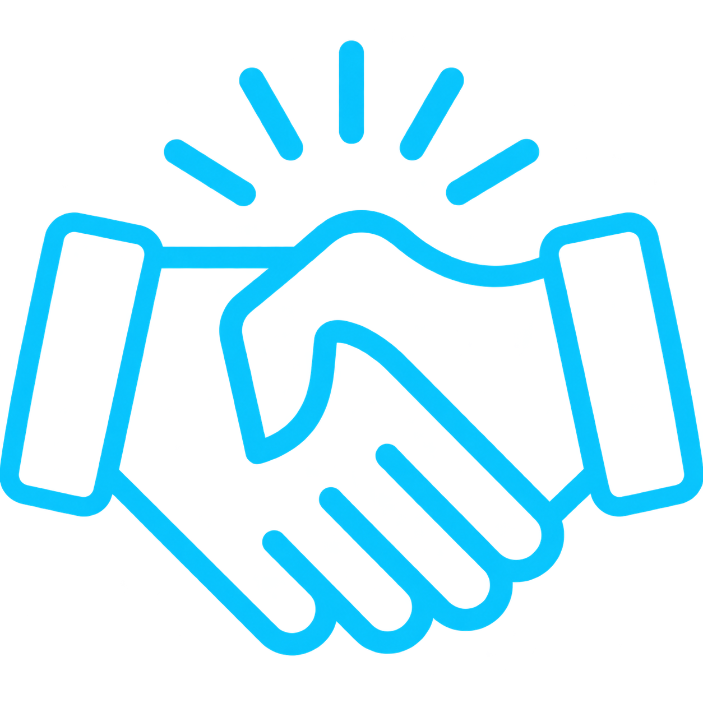

PEDRO SANT'ANNA

NAVEGANTE DA GRAND LINE
MEU NOME É
PEDRO SANT'ANNA
DESENVOLVEDOR EM FORMAÇÃO
A BORDO DA CONNECT
A Connect me deu um lugar no navio antes mesmo de eu saber navegar. Aqui transformei a minha paixão por tecnologia, jogos, sistemas e inovação em aprendizado de verdade — um ambiente feito para quem está começando e quer evoluir, tocando hardware, redes, desenvolvimento e o resto do mapa.
- CÓDIGO: BACK-END E FRONT-END
- INFRAESTRUTURA, REDES E ROTAS
- IA E AUTOMAÇÃO
- UI/UX E PROJETOS DIGITAIS
A TECNOLOGIA É
O LEME ENTRE
A IDEIA E O MUNDO REAL.
Na Connect a tecnologia não é só código: é gente, propósito e impacto. É transformar ideias em caminhos e construir o amanhã com a tripulação inteira.
Aqui cada desafio novo é um mapa ainda não cartografado — dá para aprender, evoluir e fazer parte de algo maior do que a gente só.

CONEXÃO QUE ABRENOVAS TRAVESSIAS